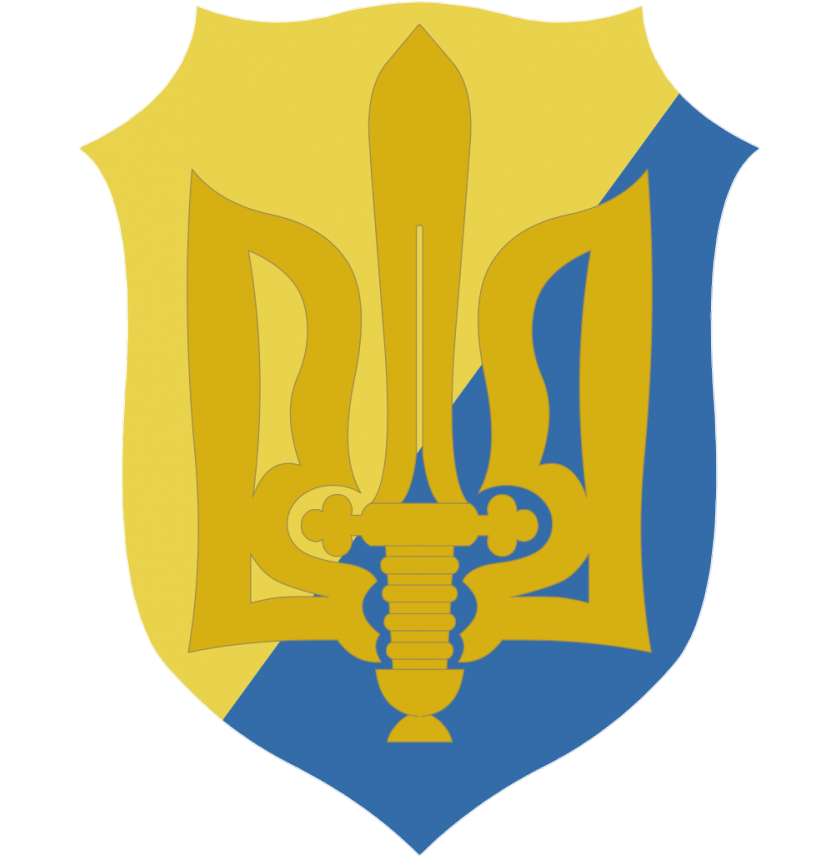

підтримати нас: 🇺🇦 клік сюди 🇺🇦
Верховна рада україни затверджує пакет законів який порушує процедуру законовстановлення, та знижує права простих громадян україни, а також Микола Азаров відмовляється підписати договір про асоціацію з Євросоюзом, що викликає обурення.
19 січня 2014року.
У Києві починається силове протистояння громадян України та режиму Януковича.
Невдовзі збираєтсья 150 тисяч людей, які готові боротись за свою свободу.
Учасники найбільшого мітингу в історії України вимагали відставки Азарова, скасування рішення уряду про відмову від асоціації з ЄС, а також звільнення з ув'язнення колишнього прем'єр міністра України Юлії Тимошенко.
Люди закликали захід запровадити санкції проти Януковича,а також його підставної влади.
Мітингувальники почали установлювати свої палатки на площі, була велика підтримка студентами, та погрози робити страйки у вузах.
30 листопада силами спецпідрозділу «Беркут» із застосуванням невиправданої фізичної сили влада здійснила спробу розігнати мітингувальників.
Це привело до ще більшого обурення.
1 грудня.
Протести стали ще більш масовими. Попри судову заборону проведення мітингів. Все це відбувалось на майдані Незалежності, Європейській площі і в урядовому кварталі.
Незадовго кількість мітингувальників зросла до 350 тисяч.
Була здійснена невдала спроба захопити адміністрацію президента на вулиці Банковій, силою було зайнято будівлю Київської міської адміністрації і будинок Федерації профспілок на Хрещатику. Міліція була витіснена з центру міста, який протестувальники оточили барикадами. З'явились перші поранені серед правоохоронців і цивільних. Паралельно починались мітинги і у сусідніх містах України. У львові зібралось 40 тисяч громадян. Здійснена друга спроба захоплення президентських адміністративних будівель, яка закінчилась жорстоким розгоном протестувальників і побиттям присутніх на місці подій випадкових свідків та журналістів. Для координації протестів був створений Штаб національного спротиву (ШНС), який очолили керівники трьох опозиційних парламентських фракцій, — Віталій Кличко (партія УДАР), Олег Тягнибок (ВО «Свобода») і Арсеній Яценюк (ВО «Батьківщина»). Вони оголосили консолідовані політичні вимоги — відставка Кабінету міністрів і проведення позачергових виборів президента, на виконання яких закликали до загальнонаціонального страйку, а 8 грудня, на віче, що на київському Майдані зібрало за оцінками кількасот тисяч людей, заявили про готовність взяти на себе всю повноту влади в Україні у випадку, якщо на тлі невщухаючих протестів президент введе в країні режим надзвичайного стану. На заклик ШНС почалось блокування урядових будівель, місць дислокацій внутрішніх військ. Після невдалої спроби у ніч проти 11 грудня силами спецпідрозділу «Беркут» та солдат внутрішніх військ взяти штурмом КМДА, Будинку профспілок і розігнати Євромайдан, Віктор Янукович погодився на переговори з лідерами ШНС. Проте їх зустріч через два дні результату не принесла. Натомість 14 грудня на Європейській площі у Києві провладні Партія регіонів і громадська організація Український вибір провели провели власний мітинг за участю до 50 тисяч чоловік, т. зв. Антимайдан, на підтримку курсу президента Януковича.Не маючи змоги подолати народний протест, 16 січня Верховна Рада з порушенням установленої процедури голосування прийняла десять законів, направлених на звуження конституційних прав і свобод громадян, їх права на мирні зібранння, обмеження свободи слова в засобах масової інформації й інтернеті, що відкривало шлях до запровадження цензури і масових репресій протестуючих. Люди обурились ще більше. Почалось масове протистояння проти міліції та проти внутрішніх військ. Події, що відбулись 19 січня 2013 року на вулиці Грушевського, знаменували початок переходу до силового протистояння із владою — після 200-тисячного мітингу на Майдані Незалежності, близько 15 години, активісти «Правого сектора» — об'єднання активістів українських радикальних організацій, здійснили невдалу спробу штурму кордону охорони урядового кварталу, у ході яких зазнали ушкоджень кілька десятків мітингувальників і міліціонерів. 20 січня сутички стали жорстокими. Обстріли феєрверками, закидування адміністративних будівель коктейлями молотова. Міліція також не чекала тому почала обстріли протестуючих гумовими кулями, світло-шумовими гранатами, снарядами зі сльозоточивим газом та поливати барикади з водометів. Попри заяви Віктора Януковича про намір припинити насилля і провести всебічне розслідування інцидентів на вулиці Грушевського, у наступні два дні міліція посилила наступ на барикади. 22 січня, біля стадіону "Динамо" йшлм жорстокі бої, з'явились перші загиблі. Сергій Нігоян, Михайло Жизневський і Роман Сеник. Ці 3 людини були убиті із вогнепальної зброї... А переслідування протестуючих почалось не лише в зоні конфлікту, але й на околицях Києва, — їх почали викрадати, піддавати тортурам і вбивати руками як силовиків, так і з допомогою найнятих банд молоді. Як стало відомо згодом, того ж 22 січня загинув Юрій Вербицький, викрадений у Києві і закатований т. зв. тітушками на околиці міста.
До 27 січня було захоплено будівлі ряду міністерств в Києві, заблоковано військові частини в прилеглих до столиці районних центрах, взято штурмом обласні адміністрації в 10 містах Західної та Центральної України, а сутички з міліцією відбувались практично в усіх великих містах країни. 20 лютого, коли Верховна Рада визнала дії силових структур незаконними і проголосувала постанову «Про відновлення легітимного Конституційного ладу», що позбавило Януковича можливості впливати на дії уряду. Побоюючись за свою безпеку, у ніч проти 22 лютого він залишив Київ, а згодом — і країну. Наступного дня Верховна Рада України 328-ма голосами народних депутатів усунула його з посади Президента України як такого, що самоусунувся від виконання своїх обов'язків. Близько 100 людей вважається вбитими, ще декілька десятків зниклими, і пару тисяч пораненими
Незабаром після Усунення Януковича, Україна повернула свій рух у сторону Євросоюзу, що не дуже сподобалось Росії. 20 лютого 2014 року Росія розпочала військову окупацію Криму, зкидування туди більше військової техніки, сил. 16 березня був проведений незаконний референдум про перехід у склад Російської федерації (ну та де 80% країни болото, лише декілька десятків міст придатні для життя). Також не за довго, почалась анексія Криму. Перемовини з місцевими політелітами про відокремлення Криму від України російські емісари розпочали ще в середині січня 2014 року. Їх ініціаторами виступили російський олігарх Костянтин Малофєєв і член Ради Федерації Федеральних зборів РФ Дмитро Саблін, які супроводжували в Криму експозицію православних святинь "Дари волхвів". У середині лютого від розмов перейшли до дій і почали розгойдувати політичну ситуацію, вимагаючи відставки "донецького уряду автономії". Ймовірно, загальний план був окреслений під час візиту 19-20 лютого до Москви голови парламенту АРК Володимира Константинова. Запуском "кримської операції" керував безпосередньо Путін зі своєї резиденції в Ново-Огарьово. У цьому також брали участь міністр оборони Сергій Шойгу, секретар Ради безпеки РФ Микола Патрушев, голова ФСБ Олександр Бортніков, голова Адміністрації Президента РФ Сергій Іванов. Починаючи з 24 лютого на півострів були введені російські повітряно-десанті і спеціальні військові підрозділи без ознак державної приналежності, а також парамілітарні загони на кшталт "козаків", "афганців", учасників "патріотичних" бійцівських клубів, які доставлялися на півострів військово-транспортними літаками Міноборони РФ та паромом через Керченську протоку. У той же день проросійськими силами за прихованої підтримки підрозділів Чорноморського флоту РФ була захоплена влада у Севастополі. Точкою неповернення стало захоплення в ніч на 27 лютого військовими підрозділами будівлі Верховної Ради АРК, а після звернення 1 березня самопроголошеного голови Ради міністрів АР Крим Сергія Аксьонова до президента Росії "посприяти у забезпеченні миру і спокою" на території Криму — розпочалась відкрита військова агресія Росії, яка привела до анексії Криму 18 березня 2014 року.
Починаючи з другої половини березня в ряді міст Півднія і Сходу України відбулися масові акції направлені на приєднання цих регіонів до Росії. В ході деяких з них проросійські активісти здійснили спроби захоплення державних установ. 12 квітня відбулось перше збройне захоплення адміністративних будівель та райвідділ міліції в Слов'янську (Донецька область) за участі громадян Росії, які вивісили на захоплених будівлях державний прапор РФ. Протягом наступних двох днів аналогічні захоплення відбулись в містах Краматорськ, Артемівськ, Красний Лиман, Дружківка, Єнакієво, Макіївка, Маріуполь, Горлівка, Харцизьк, Жданівка, Луганськ і Кіровське, а в період 28 квітня — 2 травня були захоплені Станиця Луганська, Луганськ, Красний Луч, Первомайськ, Алчевськ, Антрацит, Свердловськ, Стаханов. У відповідь на це в ніч з 12 на 13 квітня Рада нацбезпеки та оборони України розпочла широкомасштабну антитерористичну операцію (АТО) із залученням Збройних Сил України. Попри це 11 травня в Луганській та Донецькій областях, більша частина яких на цей час опинилась під контролем збройних формувань сепаратистів, був проведений референдум про приєднання до Росії, на підставі якого було проголошено створення Донецької (ДНР) та Луганської народних республік (ЛНР), які 24 травня заявили про своє об'єднання в державу «Новороссія», а також висунули територіальні претензії до України на інші південні та східні області — Одеську, Миколаївську, Херсонську, Запрорізьку, Дніпропетровську та Харківську — і звернулися до Росії з прохання про входження до її складу. Простими словами - росія заселила дуже багато проросійських людей у ці території. Сформувались огрупування сепаратистів, терористів, з допомогою ЗС РФ(збройних сил російської федерації) Захопили донецьк та луганськ, провели псевдореферендуми. Які проводились під дулами автоматів. Створили 2, неіснуючі республіки, які по суті не вільні, а окупована частина Росією. Також заснували ніким не визнану державу "Новарасия". Перші бойові зіткнення сил АТО і сепаратистів почалися ще 2 травня, коли в небі над Слов'янськом за допомогою переносного зенітно-ракетного комплексу було збито гелікоптер сил АТО, що дало підстави вважати, що на боці сепаратистів діють кваліфіковані військові фахівці. Це підтвердилося після проголошення ДНР, коли найважливіші посади в ній зайняли громадяни Росії, що мали стосунок до її спецслужб. Починаючи з 22 травня між силами АТО і збройними формуваннями сепаратистів почались регулярні бойові зіткнення — цього дня під Волновахою (Донецька область) відбувся напад на табір сил АТО, в якому загинуло 18 українських військовослужбовців. 26 травня відбулась перша масштабна успішна операція сил АТО — за допомогою авіації та десанту відбувся перший бій за Донецький аеропорт, в результаті якого було знищено до 300 сепаратистів, при цьому українська армія не зазнала жодних втрат. 4 червня сили АТО повністю звільнили Красний Лиман, 13 червня — Маріуполь. Проте наступного дня під Луганськом сепаратисти збили літак Іл-76 Збройних сил України (ЗСУ), унаслідок якого загинуло 49 осіб; того ж дня були здійснені численні напади терористів на блокпости сил АТО, під час яких було вбито 6 військслужбовців. Загалом 14 червня втрати українських силовиків склали 55 чоловік, що стало найбільшою військовою втратою України за часи незалежності. В результаті боїв з 1 по 5 липня силами АТО були звільнені Слов'янськ і Краматорськ, а основні сили проросійських сепаратистів, які значною мірою стали посилюватись громадянами та армійським озброєнням з Росії, і бойові дії перемістились в Горлівку, Донецьк і Луганськ. Попри те, що, Російська Федерація не визнала ні референдуми, проведені в ДНР та ЛНР, ні їх державний статус, 1 липня 2014 року на 23-й сесії Парламентська асамблея Організації з безпеки і співробітництва у Європі (ПАСЄ) була ухвалена резолюція, яка зазначила, що «…починаючи з лютого 2014 року, Російська Федерація … порушила всі десять гельсинкських принципів…» і що Росія «продовжує порушувати свої міжнародні зобов'язання з наміром висунути … незаконні домагання на східну частину України», 15 серпня із засудженням залучення до подій в Україні російських військових та військової техніки, що надходить з РФ під виглядом «гуманітарних конвоїв», виступив Генсек НАТО Андерс Фог Расмуссен, а 28 серпня 2014 року на прохання України та Литви відбулося екстрене засідання РадБезу ООН, у зв'язку із масовим заходом 24 серпня 2014 року російських військових на територію України. Станом на 24 лютого 2015 року під контролем проросійських сепаратистів та російських військових знаходиться знаходиться у два рази менша територія, ніж на початку проведення АТО, яка складає близько третини площі Донецької та Луганської областей. За цей час за даними ООН в результаті бойових дій загинуло 5793 і поранено 14,5 тисяч людей, більше мільйона українців стали внутрішніми переселенцями і ще понад 200 тисяч виїхало в Росію. Кількість втрат серед учасників бойових дій важко піддається обліку і за деякими даними загиблими вважаються понад 1400 з українського та 6200 з проросійського боку.
Прапор т. зв. Донецької Народної Республіки (ДНР) вперше з'явився над Донецьким аеропортом імені Сергія Прокоф'єва (ДАП) 18 квітня 2014 року, через чотири дні після оголошення початку антитерористичної операції (АТО), яка стала відповіддю на масове проникнення в східні області країни озброєних російських терористичних угруповань і захопленнями ними органів місцевої влади. Попри це, летовище продовжувало працювати в штатному режимі, а українські військові, які охороняли його внутрішній периметр перебували у будівлі т. зв. старого терміналу щоб не заважати пасажирам та персоналу. Для захоплення всього аеропорту, аби унеможливити посадку літаків та вертольотів Збройних сил України (ЗСУ), представниками ДНР була створена група у складізі сформованого в Ростові-на-Дону диверсійного загону "Іскра" чисельністю 45 чоловік, в основному, громадян РФ під командуванням російського офіцера Горшкова, загону з 26 найманців з Чечні, бойової групи бригади "Оплот" кількістю до 30 чоловік та батальйону "Восток" чисельністю до 120 чоловік під командуванням колишнього командира відділу управління донецького спецпідрозділу СБУ "Альфа" підполковника Олександра Ходаковського, який здійснював і загальне командування операцією по захопленню ДАПу. У ніч з 25-го на 26 травня офіцер СБУ Олександр Головура, що працював у службі безпеки ДАПу, завів у будівлю нового терміналу близько 80 чоловік із загону "Іскра", підрозділу чеченців і "Оплоту", яких з розташованого поблизу готелю "Політ" підтримувала решта групи. Положення українських військовослужбовців, які на відміну від значної частини бойовиків не мали воєнного досвіду, ускладнювали вразливість їх позиції у низькій будівлі старого терміналу, малочисельність (64 чоловіка зі складу 3-го кіровоградського полку спецназу та зенітно-артилерійський взвод 25-ї повітряно-десантної бригади чисельністю 15 чоловік) і відсутність важкого піхотного озброєння та бронетехніки. Фактично вони перебували на ворожій території, оскільки бойовиків підтримували співробітники донецького СБУ та МВС. Облаштувавши о 3-й годині ночі 26 травня спостережні позиції на даху старого терміналу, українські військові надранок зафіксували на даху нового терміналу вогневі точки бойовиків і підвезення до нього озброєння. У зв'язку з критичною ситуацією о 7.10 ранку робота ДАПу була зупинена, персонал евакуйовано й був надісланий запит про надання підкріплення. Операція із захисту аеропорту розпочалась за наказом в. о. Президента України Олександра Турчинова близько 11-ї години 26 травня. Під час обльоту аеропорту ударними гелікоптерами Мі-24 прозвучав і перший постріл — солдат-снайпер 3-го полку спецпризначення взяв на себе відповідальність і знешкодив бойовика, який мав набір збити вертоліт з протизенітної установки. Після цього між двома терміналами зав'язався бій зі стрілкової зброї і гранатометів. Близько 12 години дня над аеропортом здійсни політ штурмовий літак СУ-25, слідом за яким з'явилися гвинтокрили ЗСУ. Під прикриттям двох вертольотів і військових, що розташувались на даху старого терміналу, вони висадили десант з бійців 3-го (кіровоградського) полку спеціального призначення і десантників 95-ї аеромобільної бригади, загалом 121 чоловік, які зайняли периметр аеропорту і диспетчерські вежі. «Донецького аеропорту більше нема. Сьогодні я дав наказ завдати ракетний удар по новому терміналу вартістю 200 мільйонів доларів. Там були російські диверсанти. Тепер це поле бою» — В.о. Президента Олександр Турчинов, вечір 26 травня 2014 року Після авіаудару з гармат по даху нового терміналу двома штурмовиками і гелікоптерами, по ньому був завданий удар кількома ракетами, що змусило бойовиків переміститись на нижні поверхи будівлі. Знешкодивши снайперів, які вели вогонь з дахів сусідніх будівель, українські військові перейшли в наступ: близько першої дня вони пробили вхід на першому поверсі нового терміналу, через який в нього увійшла штурмова група. У паніці відступу вже за межами аеропорту 4-й взвод бригади "Восток" з гранатометів і стрілкової зброї розстріляв вантажівку із загоном "Іскра" і чеченцями, прийнявши їх за українських військових, інша машина з бойовиками перекинулась після удару об бетонну загорожу, рухаючись вулицями Донецька. Основний бій в ДАПі закінчився близько 17.00 години 26 травня, але зачистка "зеленки" та готелю "Польот", де отаборилися бойовики, тривали до вечора 27 травня 2014 року. Загалом вони втратили до 100 чоловік, третина з яких була громадянами Росії. Невдовзі після бою в ДАПі капітан Олександр Головура, який зрадив присязі і завів в аеропорт бойовиків, був викрадений в Донецьку контррозвідкою СБУ, вивезений до Києва і пізніше обміняний на українських військовополонених Перший бій за Донецький аеропорт став одним з переломних моментів у Російсько-українській війні — втративши трьох бійців пораненими, українські військові дали країні і суспільству приклад безкомпромісного протистояння супротивнику. Загалом оборона ДАПу тривала 242 дні і увійшла в новітню військову історію України як приклад мужності і стійкості українських воїнів, яких за незламність назвали "кіборгами": лише 22 січня 2015 року вщент зруйновану територію аеропорту залишив останній боєць ЗСУ, які втратили біля 700 чоловік убитими і пораненими та 24 людини полоненими. Вони б витримали, не витримали стіни...🕯️
В ході Російсько-української війни 28 серпня 2014 року українські війська і добровольчі батальйони, що брали участь у наступі в районі Іловайська, попали в оточення, при виході з якого втратили понад тисячу чоловік убитими, пораненими, полоненими і зниклими без вісті. Російсько-українська війна, яка почалась в березні 2014 року з анексії Криму, у квітні-травні перекинулась на схід країни, де проросійськими активістами були захоплені адміністративні будівлі та органи влади, а самопроголошені "народні республіки" в Донецьку і Луганську задекларували намір провести референдум про вихід зі складу України. Перші бойові зіткнення сил Антитерористичної операції (АТО), розпочатої Радою нацбезпеки та оборони України в ніч на 13 квітня, і сепаратистів почалися 2 травня, коли в небі над Слов'янськом було збито гелікоптер сил АТО, а 22 травня, після нападу на табір під Волновахою (Донецька область), в якому загинуло 18 українських військовослужбовців, бойові зіткнення між ними стали регулярними. Перша масштабна операція сил АТО була проведена 26 травня — за допомогою авіації та десанту відбувся перший бій за Донецький аеропорт, в результаті якого було знищено до 300 сепаратистів, при цьому українська армія не зазнала жодних втрат. 4 червня сили АТО повністю звільнили Красний Лиман, 13 червня — Маріуполь, 5 липня — Слов'янськ і Краматорськ, наступного дня — Артемівськ, а основні сили сепаратистів, які значною мірою стали посилюватись громадянами та армійським озброєнням з Росії, перемістились на південь Донбасу. Наступ Збройних сил України продовжився і серпні, коли практично в кільце був взятий Луганськ, а воєнізовані формування ДНР відступили із Сєвєродонецька, Лисичанська, втратили контроль над Саур-Могилою, що відкрило перспективу оточення Донецька і Горлівки. З цією метою 10 серпня розпочались бої за Іловайськ силами армійських частин, які налічували до 600 чоловік. Ситуація в зоні АТО станом на 6 серпня 2014 року © Рада національної безпеки і оборони Неправильно оцінивши ступінь захисту міста, штабом АТО для його захоплення були направлені невеликі підрозділи кількох добровольчих батальйонів у загальній кількості близько 700 чоловік, котрі лише через два дні зуміли взяти під контроль західні окраїни Іловайська. Завдяки наданій підтримці з боку армійських підрозділів 18 серпня ударні групи «Дніпра» та «Донбасу» зайняли більшу частину міста, проте розвинути успіх не змогли. Після перших невдалих спроб наступу підрозділи батальйонів «Азов» та «Шахтарськ» залишили місця бойових дій і відбули на позиції під Маріуполем, а батальйон «Івано-Франківськ» у повному складі менш, ніж за добу подолав півторитисячі кілометрів і прибув до Івано-Франківська. Це ослабило українські позиції під Іловайськом, і 19 серпня, отримавши підкріплення живою силою із Донецька і за підтримки артилерії та реактивних систем залпового вогню, збройні формування ДНР перейшли в котратаку. Лише 21 серпня командування АТО направило до Іловайська важку техніку і підмогу живою силою, яка, однак, так і не з'єдналась з добровольчими батальйонами, натомість з території Росії почалась масований обстріл українських позицій на південь від міста, а 22 серпня в бої за Іловайськ вступили частинии регулярної армії Росії, які перетнули міждержавний кордон. 24 серпня командування АТО повністю втратило контроль над ситуацією — після того як командний пункт командувача сектором був розбитий, кілька підрозділів зазнали катастрофічних втрат, а вцілілі військовослужбовці попали в полон, українські війська та добровольчі батальйони, уникаючи повного розгрому і оточення, почали хаотично залишати свої позиції. Близько 18 години російські війська зуміли взяти під контроль трасу Кутейникове-Старобешеве, що була єдиним шляхом для відступу українських підрозділів, а 28 серпня 2014 року Іловайськ був узятий ними у подвійне кільце. 29 серпня між вищим політичним та армійським керівництвом України і Росії була досягнута усна домовленість про транспортний коридор для виведення оточених сил АТО. Однак, у зв'язку із постійним перенесенням точного часу відступу і його умов генералом Русланом Хомчаком, який перебрав на себе керування оточеними військами, було прийнято рішення про негайний вихід з оточення бойовим маршем, який почався о 10-й ранку. Незважаючи на домовленість, після проходження першого кільця по українських військах, що відступали колонами у двох напрямках, був відкритий вогонь на враження. За даними Генштабу ЗСУ безпосередньо під час виходу т. зв. «зеленим» коридором 29 серпня 2014 року (не враховуюючи втрат добровольчих підрозділів МВС) загинуло — 129 осіб, поранено — 18 осіб, зникли безвісти — 22 особи, потрапило у полон — 10 осіб Пробиваючись із боями, українські війська відступали з Іловайського котла до 4 вересня, зазнавши значних втрат, — загинуло 366 і було поранено 429 чоловік, ще 128 чоловік попало в полон і 158 пропало безвісти й лише 789 військовослужбовцям вдалось вийти з отчення неушкодженими. За оцінками, з боку росіян у боях під Іловайськом загинуло не менше 150 чоловік, з боку збройних формувань — понад 330 і ще близько 200 чоловік були поранені. Станом на 22 серпня 2019 року 16 осіб залишаються неідентифікованими (входять до загального числа 366 загиблих) і 19 осіб є безвісти зниклими: 4 бійця батальйону Нацгвардії «Донбас», 12 з батальйону територіальної оборони ЗСУ «Кривбас» і 3 – з батальйону МВС «Івано-Франківськ» 4 вересня 2014 року Верховна Рада України створила Тимчасову слідчу комісію Верховної Ради України з питань розслідування обставин трагічних подій під Іловайськом, яка у своєму проміжному звіті, опублікованому 20 жовтня, прийшла до висновку, що на фоні фундаментальних проблем в організації оборони країни винуватцями трагедії були міністр оборони Валерій Гелетей і начальник Генерального штабу Віктор Муженко. За версією Генерального штабу, який свій звіт про події під Іловайськом опублікував 15 серпня 2015 року, трагедія під Іловайськом була зумовлена низьким рівнем навченості й організованості добровольчих батальйонів, масовим дезертирством і невиконанням бійцями поставлених завдань. 24 серпня 2019 року президент Володимир Зеленський підписав указ про щорічне відзначення 29 серпня як Дня пам'яті захисників, які загинули у боротьбі за незалежність, суверенітет і територіальну цілісність України.